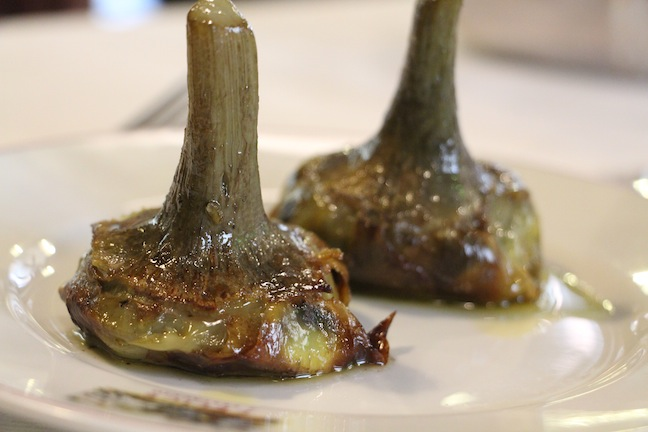

Carousel Exercise. Artisanally crafted by hand. No jQuery! No fixies!

Features
- Custom Easings (different kinds of fades)
- Custom fade duration
- Automatic 'I am here!' circles applied to your carousel
- Click on the 'I am here!' circles, or use the prev/next buttons to move back and forth
- Use any kind/number of images